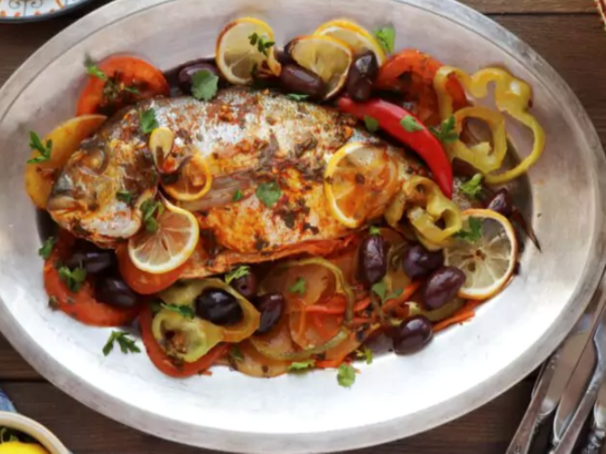

Moroccan Baked Fish Tagine with Vegetables
Ingredients:
- 1-2 whole Fish
- 2 Carrots
- 2 Potatoes
- 3 or 4 Tomatoes
- 2 Green bell pepper
- 1-2 Hot chilli pepper
- 1-2 Lemon
- Salt
- Ginger
- Black pepper
- 1 handful Kalamata olives
- 2 tbsp Parsley
Chermoula:
- 1 bunch Cilantro
- 4 cloves Garlic
- 2 tbsp Ground paprika
- 1 tbsp Cumin
- 1 tsp Salt
- 1 tsp Ginger
- ½ tsp Cayenne pepper
- ¼ tsp Saffron threads
- 3 tbsp Vegetable oil
- 2 tbsp Lemon juice
Steps to make Moroccan Baked Fish Tagine with Vegetables
1 In a small bowl, mix 1 bunch of finely chopped cilantro, 4 cloves of chopped garlic, 2 tablespoons of paprika, 1 tablespoon of cumin, 1 teaspoon salt, 1 teaspoon ginger, if using, ¼ teaspoon crumbled saffron threads, ½ teaspoon of cayenne pepper, 3 tablespoons of vegetable oil and 2 tablespoons of lemon juice. Combine until a thin marinade forms.
2 Reserve half of the prepared chermoula and use the remaining half to generously coat the fish all over and inside the cavity. Cover and leave at room temperature, while proceeding with the following steps, for about 30 minutes, or refrigerate for a few hours to overnight, to marinate.
3 Preheat the oven to 425 °F and lightly grease a baking dish with olive oil.
4 To prepare vegetables, first arrange a layer of 2 large carrots cut into thin sticks, crossing them over to create a bed-like structure. Top with 2 large sliced potatoes, in a single layer over the carrots and season with salt, ginger, and pepper, to taste.
5 Gently place the 2 marinated fish over the potatoes, then top and surround with thin slices from 3 or 4 tomatoes.
6 Combine reserved chermoula with about ¼ cup of water and a few tablespoons of olive oil to prepare a thinner sauce and pour this over the fish and vegetables.
7 Finally, top the fish with 2 green peppers, sliced into rings, a handful of olives, 2 whole chilis and about 1 or 2 sliced lemons.
8 Cover the dish with aluminum foil and bake in the preheated oven for about 25 minutes.
9 Remove the foil and continue baking for about 20-30 minutes until the fish and vegetables are fully cooked.
10 If the sauce has not reduced, you may set aside the fish to keep warm, pour the sauce into a small saucepan and bring it to a boil over medium-high heat. Cook for a few minutes until sauce is reduced then pour it back, immediately, over the fish.
11 Garnish with 2 tablespoons of parsley or cilantro, if using, then serve and enjoy!